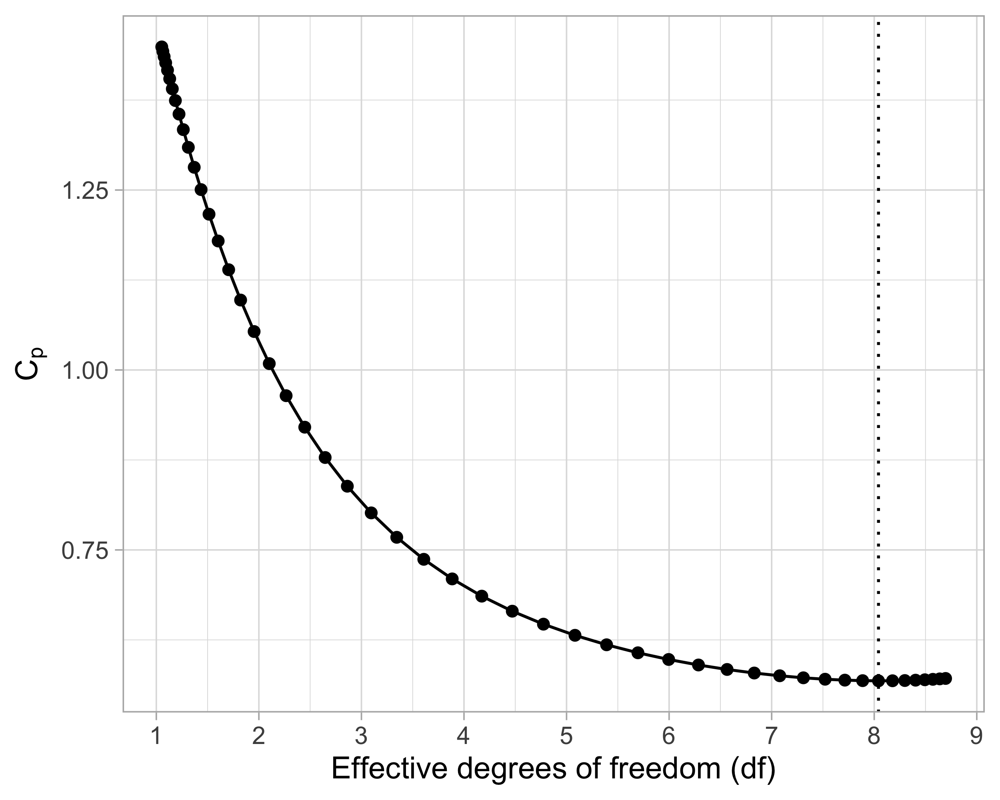
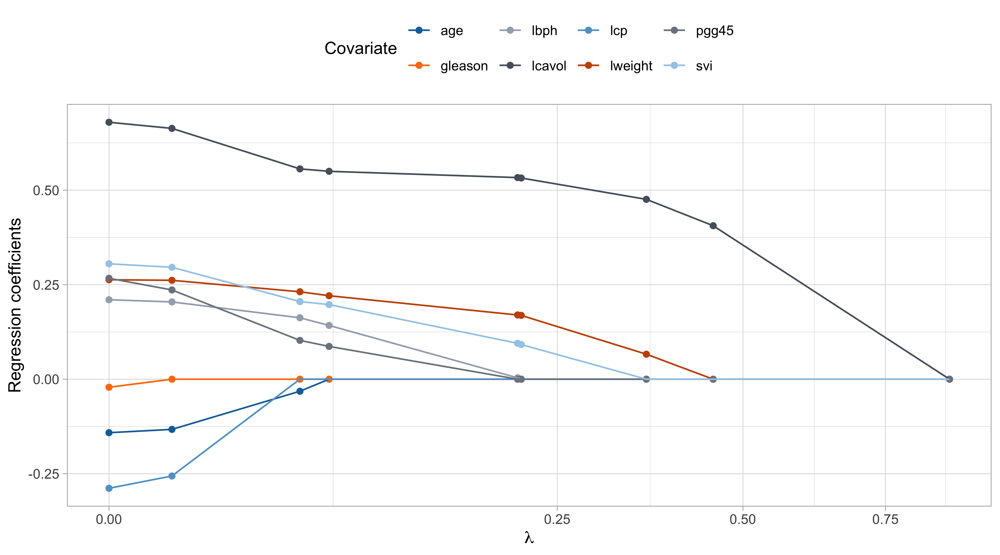
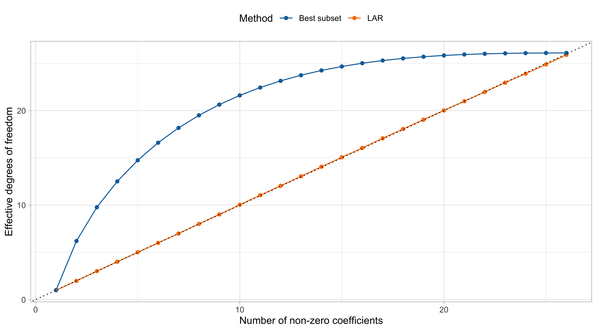

Rows: 97
Columns: 10
$ lcavol <dbl> -0.5798185, -0.9942523, -0.5108256, -1.2039728, 0.7514161, -1.…
$ lweight <dbl> 2.769459, 3.319626, 2.691243, 3.282789, 3.432373, 3.228826, 3.…
$ age <int> 50, 58, 74, 58, 62, 50, 64, 58, 47, 63, 65, 63, 63, 67, 57, 66…
$ lbph <dbl> -1.3862944, -1.3862944, -1.3862944, -1.3862944, -1.3862944, -1…
$ svi <int> 0, 0, 0, 0, 0, 0, 0, 0, 0, 0, 0, 0, 0, 0, 0, 0, 0, 0, 0, 0, 0,…
$ lcp <dbl> -1.3862944, -1.3862944, -1.3862944, -1.3862944, -1.3862944, -1…
$ gleason <int> 6, 6, 7, 6, 6, 6, 6, 6, 6, 6, 6, 6, 7, 7, 7, 6, 7, 6, 6, 6, 6,…
$ pgg45 <int> 0, 0, 20, 0, 0, 0, 0, 0, 0, 0, 0, 0, 30, 5, 5, 0, 30, 0, 0, 0,…
$ lpsa <dbl> -0.4307829, -0.1625189, -0.1625189, -0.1625189, 0.3715636, 0.7…
$ train <lgl> TRUE, TRUE, TRUE, TRUE, TRUE, TRUE, FALSE, TRUE, FALSE, FALSE,…Shrinkage and variable selection
Data Mining - CdL CLAMSES
Tommaso Rigon
Università degli Studi di Milano-Bicocca
Homepage

In this unit we will cover the following topics:
- Best subset regression
- Principal component regression
- Ridge regression
- Lasso, LARS, elastic-net
The common themes are called variable selection and shrinkage estimation.
The issue we face is the presence of a high number p of covariates that are potentially irrelevant.
This problem is quite challenging when the ratio p / n is large.
In the extreme case p > n, is there any hope to fit a meaningful model?
A biostatistical motivation
The prostate dataset
- The
prostatecancer data investigates the relationship between the prostate-specific antigen and a number of clinical measures, in men about to receive a prostatectomy.
- This dataset has been used in the original paper by Tibshirani (1996) to present the lasso. A description is given in Section 3.2.1 of HTF (2009).
We want to predict the logarithm of a prostate-specific antigen (
lpsa) as a function of:- logarithm of the cancer volume (
lcavol); - logarithm of the prostate weight (
lweight); - age each man (
age); - logarithm of the benign prostatic hyperplasia amount (
lbph); - seminal vesicle invasion (
svi), a binary variable; - logarithm of the capsular penetration (
lcp); - Gleason score (
gleason), an ordered categorical variable; - Percentage of Gleason scores 4 and 5 (
pgg45).
- logarithm of the cancer volume (
A glimpse of the prostate dataset
Summarizing, there are in total 8 variables that can be used to predict the antigen
lpsa.We centered and standardized all the covariates before the training/test split.
There are n = 67 observations in the training set and 30 in the test set.
Rows: 97
Columns: 10
$ lcavol <dbl> -1.63735563, -1.98898046, -1.57881888, -2.16691708, -0.5078744…
$ lweight <dbl> -2.00621178, -0.72200876, -2.18878403, -0.80799390, -0.4588340…
$ age <dbl> -1.86242597, -0.78789619, 1.36116337, -0.78789619, -0.25063130…
$ lbph <dbl> -1.0247058, -1.0247058, -1.0247058, -1.0247058, -1.0247058, -1…
$ svi <dbl> -0.5229409, -0.5229409, -0.5229409, -0.5229409, -0.5229409, -0…
$ lcp <dbl> -0.8631712, -0.8631712, -0.8631712, -0.8631712, -0.8631712, -0…
$ gleason <dbl> -1.0421573, -1.0421573, 0.3426271, -1.0421573, -1.0421573, -1.…
$ pgg45 <dbl> -0.8644665, -0.8644665, -0.1553481, -0.8644665, -0.8644665, -0…
$ lpsa <dbl> -0.4307829, -0.1625189, -0.1625189, -0.1625189, 0.3715636, 0.7…
$ train <lgl> TRUE, TRUE, TRUE, TRUE, TRUE, TRUE, FALSE, TRUE, FALSE, FALSE,…Correlation matrix of prostate

The regression framework
In this unit we will assume that the response variables Y_i (
lpsa) are obtained as Y_i = f(\bm{x}_i) + \epsilon_i, \qquad where \epsilon_i are iid random variables with \mathbb{E}(\epsilon_i) = 0 and \text{var}(\epsilon_i) = \sigma^2.Unless specifically stated, we will not assume the Gaussianity of the errors \epsilon_i nor make any specific assumption about f(\bm{x}), which could be non-linear.
In practice, we approximate the true f(\bm{x}) using a linear model, e.g. by considering the following function f(\bm{x}_i; \beta_0, \beta) = \beta_0+ \beta_1 x_{i1} + \cdots + \beta_p x_{ip} =\beta_0 + \bm{x}_i^T\beta, in which the regression coefficients must be estimated.
In this unit the intercept \beta_0 will often play a special role, therefore we use a slightly different notation compared to Unit A.
The variable selection problem
- Including a lot of covariates into the model is not necessarily a good thing!
Indeed, some variables are likely to be irrelevant:
- they might be correlated with other covariates and therefore redundant;
- they could be uncorrelated with the response
lpsa.
If we use all the p = 8 available covariates, the estimated f(\bm{x}; \hat{\beta_0}, \hat{\beta}) might have a high variance, without important gain in term of bias, i.e. a large mean squared error.
We are looking for a simpler model having, hopefully, a lower mean squared error.
- These considerations are particularly relevant in cases in which p > n!
A naïve approach: (ab)using p-values
| (Intercept) | lcavol | lweight | age | lbph | svi | lcp | gleason | pgg45 | |
|---|---|---|---|---|---|---|---|---|---|
| estimate | 2.46 | 0.68 | 0.26 | -0.14 | 0.21 | 0.31 | -0.29 | -0.02 | 0.27 |
| std.error | 0.09 | 0.13 | 0.10 | 0.10 | 0.10 | 0.12 | 0.15 | 0.15 | 0.15 |
| statistic | 27.60 | 5.37 | 2.75 | -1.40 | 2.06 | 2.47 | -1.87 | -0.15 | 1.74 |
| p.value | 0.00 | 0.00 | 0.01 | 0.17 | 0.04 | 0.02 | 0.07 | 0.88 | 0.09 |
It is common practice to use the p-values to perform model selection in a stepwise fashion.
However, what if the true f(\bm{x}) were not linear?
In many data mining problems, a linear model is simply an approximation of the unknown f(\bm{x}) and hypothesis testing procedures are ill-posed.
Even if the true function were linear, using p-values would not be a good idea, at least if done without appropriate multiplicity corrections.
The above p-values are meant to be used in the context of a single hypothesis testing problem, not to make iterative choices.
The predictive culture

“All models are approximations. Essentially, all models are wrong, but some are useful.”
George E. P. Box
If the focus is on prediction, we do not necessarily care about selecting the “true” set of parameters.
In many data mining problems, the focus is on minimizing the prediction errors.
Hence, often times we may accept some bias (i.e. we use a “wrong” but useful model), if this leads to a reduction in variance.
Overview of this unit
In this unit we will discuss two “discrete” methods:
- Best subset selection and its greedy approximations: forward / backward regression;
- Principal components regression (PCR).
Best subset selection perform variable selection, whereas principal components regression reduces the variance of the coefficients.
These “discrete” methods can be seen as the naïve counterpart of more advanced and continuous ideas, that are presented in the second part of the Unit.
| Shrinkage | Variable selection | |
|---|---|---|
| Discrete | Principal component regression | Best subset selection, stepwise |
| Continuous | Ridge regression | Relaxed Lasso |
- Finally, the lasso and the elastic net perform both shrinkage and variable selection.
Overview of the final results
| Least squares | Best subset | PCR | Ridge | Lasso | |
|---|---|---|---|---|---|
(Intercept) |
2.465 | 2.477 | 2.455 | 2.467 | 2.468 |
lcavol |
0.680 | 0.740 | 0.287 | 0.588 | 0.532 |
lweight |
0.263 | 0.316 | 0.339 | 0.258 | 0.169 |
age |
-0.141 | . | 0.056 | -0.113 | . |
lbph |
0.210 | . | 0.102 | 0.201 | . |
svi |
0.305 | . | 0.261 | 0.283 | 0.092 |
lcp |
-0.288 | . | 0.219 | -0.172 | . |
gleason |
-0.021 | . | -0.016 | 0.010 | . |
pgg45 |
0.267 | . | 0.062 | 0.204 | . |
Best subset selection
Best subset selection
Let us get back to our variable selection problem.
In principle, we could perform an exhaustive search considering all the 2^p possible models and then selecting the one having the best out-of-sample predictive performance.
Best subset procedure
Let \mathcal{M}_0 be the null model, which contains no predictors, i.e. set \hat{y}_i = \hat{\beta}_0 = \bar{y}.
For k =1,\dots,p, do:
Estimate all the \binom{p}{k} models that contain exactly k covariates;
Identify the “best” model with k covariates having the smallest \text{MSE}_{k, \text{train}}; call it \mathcal{M}_k.
- A model with more variables has lower training error, namely \text{MSE}_{k + 1, \text{train}} \le \text{MSE}_{k, \text{train}} by construction. Hence, the optimal subset size k must be chosen e.g. via cross-validation.
Step 1. and 2. of best subset selection

The “best” models \mathcal{M}_1,\dots, \mathcal{M}_p
- The output of the best subset selection, on the training set is:
lcavol lweight age lbph svi lcp gleason pgg45
1 ( 1 ) "*" " " " " " " " " " " " " " "
2 ( 1 ) "*" "*" " " " " " " " " " " " "
3 ( 1 ) "*" "*" " " " " "*" " " " " " "
4 ( 1 ) "*" "*" " " "*" "*" " " " " " "
5 ( 1 ) "*" "*" " " "*" "*" " " " " "*"
6 ( 1 ) "*" "*" " " "*" "*" "*" " " "*"
7 ( 1 ) "*" "*" "*" "*" "*" "*" " " "*"
8 ( 1 ) "*" "*" "*" "*" "*" "*" "*" "*" The above table means that the best model with k = 1 uses the variable
lcavol, whereas when k = 2 the selected variables arelcavolandlweight, and so on and so forth.Note that, in general, these models are not necessarily nested, i.e. a variable selected at step k is not necessarily included at step k +1. Here they are, but it is a coincidence.
- What is the optimal subset size k in terms of out-of-sample mean squared error?
The wrong way of doing cross-validation
Consider a regression problem with a large number of predictors (relative to n) such as the
prostatedataset.A typical strategy for analysis might be as follows:
Screen the predictors: find a subset of “good” predictors that show fairly strong correlation with the response;
Using this subset of predictors (e.g.
lcavol,lweightandsvi), build a regression model;Use cross-validation to estimate the prediction error of the model of the step 2.
Is this a correct application of cross-validation?
If your reaction was “this is absolutely wrong!”, it means you correctly understood the principles of cross-validation.
If you though this was an ok-ish idea, you may want to read Section 7.10.2 of HTF (2009), called “the wrong way of doing cross-validation”.
Step 3. of best subset selection via cross-validation

- By applying the “1 standard error rule”, we select k = 2, i.e.
lcavolandlweight.
Forward regression
- Forward regression is greedy approximation of best subset selection, that produces a sequence of nested models. It is computationally feasible and can be applied when p > n.
Forward regression
Let \mathcal{M}_0 be the null model, which contains no predictors, i.e. set \hat{y}_i = \hat{\beta}_0 = \bar{y}.
For k = 0,\dots, \min(n - 1, p - 1), do:
Consider the p − k models that augment the predictors in \mathcal{M}_k with one additional covariate.
Identify the “best” model among the above p - k competitors having the smallest \text{MSE}_{k, \text{train}} and call it \mathcal{M}_k.
- It can be shown that the identification of the optimal new predictor can be efficiently computed using the QR decomposition (see Exercises).
Backward regression
- When p < n, an alternative greedy approach is backward regression, which also produces a sequence of nested models.
Backward regression
Let \mathcal{M}_p be the full model, which contains all the predictors.
For k = p, p - 1,\dots, 1, do:
Consider the k models that contain all but one of the predictors in \mathcal{M}_k, for a total of k − 1 predictors.
Identify the “best” model \mathcal{M}_k among these k models having the smallest \text{MSE}_{k, \text{train}}.
- It can be shown that the dropped predictor is the one with the lowest absolute Z-score or, equivalently, the highest p-value (see Exercises).
Forward, backward and best subset

- In the
prostatedataset, forward, backward and best subset selection all gave exactly the same path of solutions on the full training set.
Pros and cons of subset selection strategies
Pros
Best subset selection is appealing because of its conceptual simplicity.
Best subset and forward regression can be used, at least in principle, even when p > n.
Cons
Subset strategies tend to select models that are “too simple”, especially in presence of correlated variables.
Despite the recent advances, when p is large best subset selection is computationally unfeasible.
Leaps and bounds computational strategies can not be easily generalized to GLMs.
Backward regression can not be applied when p > n.
Principal components regression
Data compression
At this point we established that many covariates = many problems.
Instead of selecting the “best” variables, let us consider a different perspective.
We consider a compressed version of the covariates that has smaller dimension k but retains most information.
Intuitively, we want to reduce the variance by finding a good compression, without sacrificing too much bias.
The main statistical tool, unsurprisingly, will be the celebrated principal components analysis (PCA).
We will compress the covariate information \bm{X} using a smaller set of variables \bm{Z}, i.e. the principal components.
The intercept term
In principal component regression and in other related methods (ridge, lasso and elastic-net), we do not wish to compress the intercept term \beta_0. In a sense, we want to “remove it”.
Let us consider a reparametrization of the linear model, in which \alpha = \beta_0 + \bar{\bm{x}}^T\beta. This is equivalent to a linear model with centered predictors: \begin{aligned} f(\bm{x}_i; \alpha, \beta) & = \beta_0 + \bm{x}_i^T\beta = \alpha - \bar{\bm{x}}^T\beta + \bm{x}_i^T\beta = \alpha + (\bm{x}_i -\bar{\bm{x}})^T\beta. \\ \end{aligned}
The estimates for (\alpha, \beta) can be now computed separately and in two steps.
The estimate of the intercept with centered predictors is \hat{\alpha} = \bar{y}. In fact: \hat{\alpha} = \arg\min_{\alpha \in \mathbb{R}}\sum_{i=1}^n\{y_i - \alpha - (\bm{x}_i -\bar{\bm{x}})^T\beta\}^2 = \frac{1}{n}\sum_{i=1}^n\{y_i - (\bm{x}_i -\bar{\bm{x}})^T\beta\} = \frac{1}{n}\sum_{i=1}^ny_i.
Then, the estimate of \beta can be obtained considering a linear model without intercept: f(\bm{x}_i; \beta) = (\bm{x}_i -\bar{\bm{x}})^T\beta, employed to predict the centered responses y_i - \bar{y}.
Centering the predictors
- In principal components regression, we replace original data Y_i = f(\bm{x}_i) + \epsilon_i with their centered version: x_{ij} - \bar{x}_j, \qquad y_i - \bar{y}, \qquad i=1,\dots,n; \ \ j=1,\dots,p.
- In the end, we will make predictions in the original scale, which requires a simple final adjustment. One simply need to compute the intercept term \hat{\beta}_0 = \bar{y} - \bar{\bm{x}}\hat{\beta}, and then compute the predictions via the formula \hat{\beta}_0 + \bm{x}_i^T\hat{\beta} = \hat{\alpha} + \bm{x}_{i}^T\hat{\beta}.
- Remark. The centering operation is a mathematical trick that facilitate the exposition, but is unconsequential from an estimation point of view.
Centering the predictors II
Centering assumption
In principal components regression, we assume the data have been previously centered: \frac{1}{n}\sum_{i=1}^n y_{i} = 0, \qquad \frac{1}{n}\sum_{i=1}^nx_{ij} = 0, \qquad j=1,\dots,p.
- Using centered predictor means that we can focus on linear models without intercept: f(\bm{x}_{i}; \beta) = x_{i1}\beta_1 + \cdots + x_{ip}\beta_p = \bm{x}_{i}^T\beta.
- Under the centering assumption the covariance matrix of the data is simply S = \frac{1}{n} \bm{X}^T\bm{X}.
Singular value decomposition (SVD)
Let \bm{X} be a n \times p matrix. Then, its full form singular value decomposition is: \bm{X} = \bm{U} \bm{D} \bm{V}^T = \sum_{j=1}^m d_j \tilde{\bm{u}}_j \tilde{\bm{v}}_j^T, with m =\min\{n, p\} and where:
- the n \times n matrix \bm{U} = (\tilde{\bm{u}}_1, \dots, \tilde{\bm{u}}_n) is orthogonal, namely: \bm{U}^T \bm{U} = \bm{U}\bm{U}^T= I_n;
- the p \times p matrix \bm{V} = (\tilde{\bm{v}}_1,\dots,\tilde{\bm{v}}_p) is orthogonal, namely: \bm{V}^T \bm{V} = \bm{V}\bm{V}^T= I_p;
- the n \times p matrix \bm{D} has diagonal entries [\bm{D}]_{jj} = d_j, for j=1,\dots,m, and zero entries elsewhere;
The real numbers d_1 \ge d_2 \ge \cdots \ge d_m \ge 0 are called singular values.
If one or more d_j = 0, then the matrix \bm{X} is singular.
Principal component analysis I
Le us assume that p < n and that \text{rk}(\bm{X}) = p, recalling that \bm{X} is a centered matrix.
Using SVD, the matrix \bm{X}^T\bm{X} can be expressed as \bm{X}^T\bm{X} = (\bm{U} \bm{D} \bm{V}^T)^T \bm{U} \bm{D} \bm{V}^T = \bm{V} \bm{D}^T \textcolor{red}{\bm{U}^T \bm{U}} \bm{D} \bm{V}^T = \bm{V} \bm{\Delta}^2 \bm{V}^T, where \bm{\Delta}^2 = \bm{D}^T\bm{D} is a p \times p diagonal matrix with entries d_1^2,\dots,d_p^2.
This equation is at the heart of principal component analysis (PCA). Define the matrix \bm{Z} = \bm{X}\bm{V} = \bm{U}\bm{D}, whose columns \tilde{\bm{z}}_1,\dots,\tilde{\bm{z}}_p are called principal components.
The matrix \bm{Z} is orthogonal, because \bm{Z}^T\bm{Z} = \bm{D}^T\textcolor{red}{\bm{U}^T \bm{U}} \bm{D} = \bm{\Delta}^2, which is diagonal.
Moreover, by definition the entries of \bm{Z} are linear combination of the original variables: z_{ij} = x_{i1}v_{i1} + \cdots + x_{ip} v_{ip} = \bm{x}_{i}^T\tilde{\bm{v}}_j. The columns \tilde{\bm{v}}_1,\dots,\tilde{\bm{v}}_p of \bm{V} are sometimes called loadings.
Principal component analysis II
Principal components form an orthogonal basis of \bm{X}, but they are not a “random” choice and they do not coincide with them Gram-Schmidt basis of Unit A.
Indeed, the first principal component is the linear combination having maximal variance: \tilde{\bm{v}}_1 = \arg\max_{\bm{v} \in \mathbb{R}^p} \text{var}(\bm{X}\bm{v})= \arg\max_{\bm{v} \in \mathbb{R}^p} \frac{1}{n} \bm{v}^T\bm{X}^T\bm{X} \bm{v}, \quad \text{ subject to } \quad \bm{v}^T \bm{v} = 1.
The second principal component maximizes the variance under the additional constraint of being orthogonal to the former. And so on and so forth.
The values d_1^2 \ge d_2^2 \ge \dots \ge d_p^2 > 0 are the eigenvalues of \bm{X}^T\bm{X} and correspond to the rescaled variances of each principal component, that is \text{var}(\tilde{\bm{z}}_j) = \tilde{\bm{z}}_j^T \tilde{\bm{z}}_j/n = d^2_j / n.
Hence, the quantity d_j^2 / \sum_{j'=1}^p d_{j'}^2 measures the amount of total variance captured by principal components.
Principal component analysis: prostate data

Principal components regression (PCR)
We use the first k \le p principal components to predict the responses y_{i} via f(\bm{z}_i; \gamma) = \gamma_1 z_{i1} + \cdots + \gamma_kz_{ik}, \qquad i=1,\dots,n,
Because of orthogonality, the least squares solution is straightforward to compute: \hat{\gamma}_j = \frac{\tilde{\bm{z}}_j^T\bm{y}}{\tilde{\bm{z}}_j^T\tilde{\bm{z}}_j} = \frac{1}{d_j^2}\tilde{\bm{z}}_j^T\bm{y}, \qquad j=1,\dots,k.
The principal components are in order of importance and effectively compressing the information contained in \bm{X} using only k \le p variables.
When k = p we are simply rotating the original matrix \bm{X} = \bm{Z}\bm{V}, i.e. performing no compression. The predicted values coincide with OLS.
The number k is a complexity parameter which should be chosen via information criteria or cross-validation.
Selection of k: cross-validation

Shrinkage effect of principal components I
A closer look to the PCR solution reveals some interesting aspects. Recall that: \tilde{\bm{z}}_j = \bm{X}\tilde{\bm{v}}_j = d_j \tilde{\bm{u}}_j, \qquad j=1,\dots,p.
The predicted values for the centered responses \bm{y} of the PCR with k components are: \bm{X}\hat{\beta}_\text{pcr} = \sum_{j=1}^k \tilde{\bm{z}}_j \hat{\gamma}_j = \bm{X} \sum_{j=1}^k \tilde{\bm{v}}_j \hat{\gamma}_j, \qquad \text{ where } \qquad \hat{\beta}_\text{pcr} = \sum_{j=1}^k \tilde{\bm{v}}_j \hat{\gamma}_j.
This representation highlights two important aspects:
- It is possible to express the PCR solution in the original scale, for better interpretability;
- The vector \hat{\beta}_\text{pcr} is a constrained solution, being a combination of k \le p coefficients, therefore reducing the complexity of the model and shrinking the coefficients.
When k = 1, then the \hat{\beta}_\text{pcr} estimate coincide with the scaled loading vector \hat{\beta}_\text{pcr} = \hat{\gamma}_1 \tilde{\bm{v}}_1;
When k = p then the \hat{\beta}_\text{pcr} coincides with ordinary least squares (see Exercises).
Shrinkage effect of principal components II
The variance of \hat{\beta}_\text{pcr}, assuming iid errors \epsilon_i in the original data, is: \text{var}(\hat{\beta}_\text{pcr}) = \sigma^2\sum_{j=1}^k \frac{1}{d_j^2} \tilde{\bm{v}}_j\tilde{\bm{v}}_j^T.
Thus, if a multicollinearity exists, then it appears as a principal component with very small variance, i.e. a small d_j^2. Its removal therefore drastically reduces the variance of \hat{\beta}_\text{pcr}.
Furthermore, the predicted values for the centered data can be expressed as \bm{X}\hat{\beta}_\text{pcr} = \sum_{j=1}^k \tilde{\bm{z}}_j \hat{\gamma}_j = \sum_{j=1}^k \tilde{\bm{z}}_j \frac{\tilde{\bm{z}}_j^T\bm{y}}{\tilde{\bm{z}}_j^T\tilde{\bm{z}}_j} = \sum_{j=1}^k \textcolor{darkblue}{d_j} \tilde{\bm{u}}_j \frac{\textcolor{darkblue}{d_j}}{\textcolor{darkblue}{d_j^2}} \frac{\tilde{\bm{u}}_j^T\bm{y}}{\textcolor{red}{\tilde{\bm{u}}_j^T\tilde{\bm{u}}_j}} = \sum_{j=1}^k \tilde{\bm{u}}_j \tilde{\bm{u}}_j^T \bm{y}.
The columns of \bm{U}, namely the vectors \tilde{\bm{u}}_j are the normalized principal components.
Hence, we are shrinking the predictions towards the main principal directions.
Shrinkage effect of principal components III

Pros and cons of PCR
Pros
If you transform back the coefficients, there is a clean interpretation of the impact of the covariates on the response.
Principal component regression can be easily generalized to the GLM case.
Principal components might be interesting in their own right, as they describe the dependence structure among covariates.
Cons
All the variables are used for predictions, which could be computationally demanding.
The shrinkage effect on the regression coefficients is somewhat indirect and not smooth.
Principal component regression can not be applied when p > n.
Ridge regression
The ridge regularization method
- The ridge estimator is the most common shrinkage method and is the minimizer of \sum_{i=1}^n(y_i - \beta_0 - \bm{x}_i^T\beta)^2 \qquad \text{subject to} \qquad \sum_{j=1}^p \beta_j^2 \le s.
When the complexity parameter s is small, the coefficients are explicitly shrinked, i.e. biased, towards zero.
On the other hand, if s is large enough, then the ridge estimator coincides with ordinary least squares.
- In ridge regression, the variability of the estimator is explicitly bounded, although this comes with some bias. The parameter s controls the bias-variance trade-off.
- The intercept term \beta_0 is not penalized, because there are no strong reasons to believe that the mean of y_i equals zero. However, as before, we would like to “remove the intercept”.
Centering and scaling the predictors I
- The ridge solutions are not equivariant under scalings of the input, so one normally standardizes the input to have unit variance, if they are not in the same scale.
- Moreover, as for PCR, we can estimate the intercept using a two-step procedure:
- The reparametrization \alpha = \beta_0 + \bar{\bm{x}}^T\beta is equivalent to centering the predictors;
- The estimate for the centered intercept is \hat{\alpha} = \bar{y};
- The ridge estimate can be obtained considering a model without intercept, using centered responses and predictors.
- Hence, in ridge regression we replace original data Y_i = f(\bm{x}_i) + \epsilon_i with their standardized version: \frac{x_{ij} - \bar{x}_j}{s_j}, \qquad y_i - \bar{y}, \qquad i=1,\dots,n; \ \ j=1,\dots,p. where s_j^2 = n^{-1}\sum_{i=1}^n (x_{ij} - \bar{x}_j)^2 is the sample variance.
Centering and scaling the predictors II
- It is easy to show (see Exercises) that the coefficients expressed in the original scale are \hat{\beta}_0 = \bar{y} - \bar{\bm{x}}\hat{\beta}_\text{ridge}, \qquad \hat{\beta}_\text{scaled-ridge} = \text{diag}(1 / s_1,\dots, 1/s_p) \hat{\beta}_\text{ridge}. Thus, the predictions on the original scale are \hat{\beta}_0 + \bm{x}_i^T\hat{\beta}_\text{scaled-ridge} = \bar{y} + \bm{x}_{i}^T\hat{\beta}_\text{ridge}.
For ridge problems we will assume the data have been previously standardized, namely \frac{1}{n}\sum_{i=1}^ny_{i} = 0, \qquad \frac{1}{n}\sum_{i=1}^nx_{ij} = 0, \qquad \frac{1}{n}\sum_{i=1}^n x_{i}^2 = 1\qquad j=1,\dots,p.
- We will say that the ridge estimator \hat{\beta}_\text{ridge} is the minimizer of following system \sum_{i=1}^n(y_i - \bm{x}_{i}^T\beta)^2 \qquad \text{subject to} \qquad \sum_{j=1}^p \beta_j^2 \le s.
Lagrange multipliers and ridge solution
- The ridge regression problem can be equivalently expressed in its Lagrangian form, which greatly facilitates computations. The ridge estimator \hat{\beta}_\text{ridge} is the minimizer of \sum_{i=1}^n(y_{i} - \bm{x}_{i}^T\beta)^2 + \lambda \sum_{j=1}^p\beta_j^2 = \underbrace{||\bm{y} - \bm{X}\beta||^2}_{\text{least squares}} + \underbrace{\lambda ||\beta||^2}_{\text{\textcolor{red}{ridge penalty}}}, where \lambda > 0 is a complexity parameter controlling the penalty. It holds that s = ||\hat{\beta}_\text{ridge} ||^2.
- When \lambda = 0 then \hat{\beta}_\text{ridge} = \hat{\beta}_\text{ols} whereas when \lambda \rightarrow \infty we get \hat{\beta}_\text{ridge} = 0.
Ridge regression estimator
For any n\times p design matrix \bm{X}, not necessarily of full-rank, the ridge estimator is \hat{\beta}_\text{ridge} = (\bm{X}^T\bm{X} + \lambda I_p)^{-1}\bm{X}^T\bm{y}. Such an estimator always exists and is unique (even when p > n).
The geometry of the ridge solution
The ridge path

Comments on the ridge path
The values of \lambda are in somewhat arbitrary scale. The ridge penalty has a concrete effect starting from \lambda / n > 0.1 or so.
The variable
lcavolis arguably the most important, followed bylweightandsvi, being the one that receive less shrinkage compared to the others.
The coefficient of
age,gleasonandlcp, is negative at the beginning and then become positive for large values of \lambda.This indicate that their negative value in \hat{\beta}_\text{ols} was probably a consequence of their correlation with other variables.
- There is an interesting similarity between this plot and the one of principal component regression… is it a coincidence?
Shrinkage effect of ridge regression I
- Considering, once again, the singular value decomposition, we get: \begin{aligned} \bm{X}\hat{\beta}_\text{ridge} &= \bm{X}(\bm{X}^T\bm{X} + \lambda I_p)^{-1}\bm{X}^T\bm{y} \\ & = \bm{U}\bm{D} \bm{V}^T[\bm{V}(\bm{D}^T\bm{D} + \lambda I_p)\bm{V}^T]^{-1}(\bm{U}\bm{D}\bm{V})^T\bm{y} \\ & = \bm{U}\bm{D} \textcolor{red}{\bm{V}^T\bm{V}}(\bm{D}^T\bm{D} + \lambda I_p)^{-1} \textcolor{red}{\bm{V}^T \bm{V}} \bm{D}^T \bm{U} ^T\bm{y} \\ & = \bm{U}\bm{D}(\bm{D}^T\bm{D} + \lambda I_p)^{-1}\bm{D}^T\bm{U}^T\bm{y} \\ & = \bm{H}_\text{ridge}\bm{y} = \sum_{j=1}^p \tilde{\bm{u}}_j \frac{d_j^2}{d_j^2 + \lambda}\tilde{\bm{u}}_j^T \bm{y}, \end{aligned} where \bm{H}_\text{ridge} = \bm{X}(\bm{X}^T\bm{X} + \lambda I_p)^{-1}\bm{X}^T is the so-called hat matrix of ridge regression.
This means that ridge regression shrinks the principal directions by an amount that depends on the eigenvalues d_j^2.
In other words, it smoothly reduces the impact of the redundant information.
Shrinkage effect of ridge regression II
A sharp connection with principal components regression is therefore revealed.
Compare the previous formula for \bm{X}\hat{\beta}_\text{ridge} with the one we previously obtained for \bm{X}\hat{\beta}_\text{pcr}.
- More explicitly, for ridge regression we will have that \hat{\beta}_\text{ridge} = \bm{V}\text{diag}\left(\frac{d_1}{d_1^2 + \lambda}, \dots, \frac{d_p}{d_p^2 + \lambda}\right)\bm{U}^T\bm{y}. whereas for principal components regression with k components we get \hat{\beta}_\text{pcr} = \bm{V}\text{diag}\left(\frac{1}{d_1}, \dots, \frac{1}{d_k}, 0, \dots, 0\right)\bm{U}^T\bm{y}.
- Both operate on the singular values, but where principal component regression thresholds the singular values, ridge regression shrinks them.
Bias-variance trade-off
- The ridge regression add some bias to the estimates, but it reduces their variance.
- The variance of \hat{\beta}_\text{ridge}, assuming iid errors \epsilon_i in the original scale with variance \sigma^2, results: \text{var}(\hat{\beta}_\text{ridge}) = \sigma^2\sum_{j=1}^p \frac{d_j^2}{(d_j^2 + \lambda)^2} \tilde{\bm{v}}_j\tilde{\bm{v}}_j^T, whose diagonal elements are always smaller than those of \text{var}(\hat{\beta}_\text{ols}).
The above formula highlights that ridge will be very effective in presence highly correlated variables, as they will be “shrunk” away by the penalty.
What typically happens is that such a reduction in variance compensate the increase in bias, especially when p is large relative to n.
☠️ - A historical perspective I
The ridge regression estimator was originally proposed by Hoerl and Kennard (1970) with a quite different motivation in mind.
In linear models, the estimate of \beta is obtained by solving the normal equations (\bm{X}^T\bm{X})\beta = \bm{X}^T\bm{y}, which could be ill-conditioned.
In other words, the condition number \kappa(\bm{X}^T\bm{X}) = \frac{d_1^2}{d_p^2}, might be very large, leading to numerical inaccuracies, since the matrix \bm{X}^T\bm{X} is numerically singular and therefore not invertible in practice.
☠️ - A historical perspective II
Ridge provides a remedy for ill-conditioning, by adding a “ridge” to the diagonal of \bm{X}^T\bm{X}, obtaining the modified normal equations (\bm{X}^T\bm{X} + \lambda I_p)\beta = \bm{X}^T\bm{y}.
The condition number of the modified (\bm{X}^T\bm{X} + \lambda I_p) matrix becomes \kappa(\bm{X}^T\bm{X} + \lambda I_p) = \frac{\lambda + d_1^2}{\lambda + d_p^2}.
Notice that even if d_p = 0, i.e. the matrix \bm{X} is singular, then condition number will be finite as long as \lambda > 0.
This technique is known as Tikhonov regularization, after the Russian mathematician Andrey Tikhonov.
☠️ - A historical perspective III

- Figure 1 of the original paper by Hoerl and Kennard (1970), displaying the bias-variance trade-off.
On the choice of \lambda
- The penalty parameter \lambda determines the amount of bias and variance of \hat{\beta}_\text{ridge} and therefore it must be carefully estimated.
Minimizing the loss ||\bm{y} - \bm{X}\hat{\beta}_\text{ridge}||^2 over \lambda is a bad idea, because it would always lead to \lambda = 0, corresponding to \hat{\beta}_\text{ridge} = \hat{\beta}_\text{ols}.
Indeed, \lambda is a complexity parameter and, like the number of covariates, should be selected using information criteria or training/test and cross-validation.
Suppose we wish to use an information criteria such as the AIC or BIC, of the form \text{IC}(p) = -2 \ell(\hat{\beta}_\text{ridge}) + \text{penalty}(\text{``degrees of freedom"}). We need a careful definition of degrees of freedom that is appropriate in this context.
The current definition of degrees of freedom, i.e. the number of non-zero coefficients, is not appropriate for ridge regression, because it would be equal to p for any value of \lambda.
Effective degrees of freedom I
- Let us recall that the original data are Y_i = f(\bm{x}_i) + \epsilon_i and that the optimism for a generic estimator \hat{f}(\bm{x}) is defined as the following average of covariances \text{Opt} = \frac{2}{n}\sum_{i=1}^n\text{cov}(Y_i, \hat{f}(\bm{x}_i)), which is equal to \text{Opt}_\text{ols} = (2\sigma^2p)/ n in ordinary least squares.
Effective degrees of freedom
Let \hat{f}(\bm{x}) be an estimate for the regression function f(\bm{x}) based on the data Y_1,\dots,Y_n. The effective degrees of freedom are defined as \text{df} = \frac{1}{\sigma^2}\sum_{i=1}^n\text{cov}(Y_i, \hat{f}(\bm{x}_i)).
Effective degrees of freedom II
The effective degrees of freedom of ordinary least squares and principal component regression are \text{df}_\text{ols} = p + 1, \qquad \text{df}_\text{pcr} = k + 1, where the additional term correspond to the intercept.
After some algebra, one finds that the effective degrees of freedom of ridge regression are \text{df}_\text{ridge} = 1 + \text{tr}(\bm{H}_\text{ridge}) = 1 + \sum_{j=1}^p \frac{d_j^2}{d_j^2 + \lambda}.
Using the above result, we can plug-in \text{df}_\text{ridge} into the formula of the C_p of Mallows: \widehat{\mathrm{ErrF}} = \frac{1}{n}\sum_{i=1}^n(y_i - \bm{x}_i^T\hat{\beta}_\text{scaled-ridge})^2 + \frac{2 \hat{\sigma}^2}{n} \text{df}_\text{ridge}. where the residual variance is estimated as \hat{\sigma}^2 = (n - \text{df}_\text{ridge})^{-1} \sum_{i=1}^n(y_i - \bm{x}_i^T\hat{\beta}_\text{scaled-ridge})^2.
Effective degrees of freedom III

Cross-validation for ridge regression I
Training / test strategies and cross-validation are also valid tools for selecting \lambda.
Most statistical software packages use a slightly different parametrization for \lambda, as they minimize \textcolor{red}{\frac{1}{n}}\sum_{i=1}^n(y_{i} - \bm{x}_{i}^T\beta)^2 + \tilde{\lambda} \sum_{j=1}^p\beta_j^2, where the penalty parameter \tilde{\lambda} = \lambda / n.
- This parametrization does not alter the estimate of \hat{\beta}_\text{ridge} but is more amenable for cross-validation as the values of \tilde{\lambda} can be compared across dataset with different sample sizes.
Different R packages have different defaults about other aspects too.
For instance, the R package
glmnetuses \tilde{\lambda} and also standardizes the response \bm{y} and then transforms back the estimated coefficients into the original scale.
Cross-validation for ridge regression II

The ridge estimate

Pros and cons of ridge regression
Pros
The ridge solution always exists and is unique, even when p > n or in presence of perfect collinearity.
For fixed values of \lambda, efficient computations are available using QR and Cholesky decomposition.
At the end of this unit we will describe a general optimization strategy that recovers the entire “ridge path”, i.e. the estimate \hat{\beta}_\text{ridge} for several values of \lambda.
Ridge regression has also a transparent Bayesian interpretation, since the penalty can be interpreted as a Gaussian prior on \beta.
Cons
- In ridge regression, all variables are used. This is in contrast with best subset selection.
The lasso
Looking for sparsity

- Signal sparsity is the assumption that only a small number of predictors have an effect, i.e. \beta_j = 0, \qquad \text{for most} \qquad j \in \{1,\dots,p\}.
- In this case we would like our estimator \hat{\beta} to be sparse, meaning that \hat{\beta}_j = 0 for many j \in \{1,\dots,p\}.
- Sparse estimators are desirable because:
- perform variable selection and improve the interpretability of the results;
- Speed up the computations of the predictions, because less variables are needed.
- Best subset selection is sparse (but computationally unfeasible), the ridge estimator is not.
The lasso regularization method
- The lasso is in the highly influential paper of Tibshirani (1996). It is a method that performs both shrinkage and variable selection
- The lasso estimator is the minimizer of the following system \sum_{i=1}^n(y_i - \beta_0- \bm{x}_i^T\beta)^2 \qquad \text{subject to} \qquad \sum_{j=1}^p |\beta_j| \le s. therefore when the complexity parameter s is small, the coefficients of \hat{\beta}_\text{lasso} are shrinked and when s is large enough \hat{\beta}_\text{lasso} = \hat{\beta}_\text{ols}, as in ridge regression.
- The lasso is deceptively similar to ridge. However, the change from a quadratic penalty to the absolute value has crucial sparsity implications.
- The intercept term \beta_0 is not penalized, as for ridge, because we can remove it by centering the predictors.
Centering and scaling the predictors
Thus, as for ridge regression, we will center and scale predictors and response.
It is easy to show that the coefficients expressed in the original scale are \hat{\beta}_0 = \bar{y} - \bar{\bm{x}}\hat{\beta}_\text{lasso}, \qquad \hat{\beta}_\text{scaled-lasso} = \text{diag}(1 / s_1,\dots, 1/s_p) \hat{\beta}_\text{lasso}. Thus, the predictions on the original scale are \hat{\beta}_0 + \bm{x}_i^T\hat{\beta}_\text{scaled-lasso} = \bar{y} + \bm{x}_{i}^T\hat{\beta}_\text{lasso}.
For lasso problems we will assume the data have been previously standardized, namely \frac{1}{n}\sum_{i=1}^ny_{i} = 0, \qquad \frac{1}{n}\sum_{i=1}^nx_{ij} = 0, \qquad \frac{1}{n}\sum_{i=1}^n x_{i}^2 = 1\qquad j=1,\dots,p.
- We will say that the lasso estimator \hat{\beta}_\text{lasso} is the minimizer of following system \sum_{i=1}^n(y_i - \bm{x}_{i}^T\beta)^2 \qquad \text{subject to} \qquad \sum_{j=1}^p| \beta_j| \le s.
Lagrange multipliers and lasso solution
The lasso problem can be equivalently expressed in its Lagrangian form, which is more amenable for computations.
Having remove the intercept, the lasso estimator \hat{\beta}_\text{lasso} is the minimizer of \underbrace{\textcolor{darkblue}{\frac{1}{2 n}}\sum_{i=1}^n(y_{i} - \bm{x}_i^T\beta)^2}_{\text{least squares}} + \underbrace{\lambda \sum_{j=1}^p|\beta_j|}_{\text{\textcolor{red}{lasso penalty}}} where \lambda > 0 is a complexity parameter controlling the penalty.
When \lambda = 0 the penalty term disappears and \hat{\beta}_\text{lasso} = \hat{\beta}_\text{ols}. On the other hand, there exists a finite value of \lambda_\text{max} < \infty such that \hat{\beta}_\text{lasso} = 0.
For any intermediate value 0 < \lambda < \lambda_\text{max} we get a combination of shrinked but positive coefficients, and a set of coefficients whose value is exactly zero.
- Unfortunately, there is no closed-form expression for the lasso solution.
The geometry of the lasso solution

Single predictor I
To gain some understanding, let us consider the single-predictor scenario, in which \hat{\beta}_\text{lasso} = \arg\min_{\beta}\sum_{i=1}^n(y_{i} - x_{i}\beta)^2 + \lambda |\beta|.
This simple problem admits an explicit expression (see Exercises), which is \hat{\beta}_\text{lasso} = \begin{cases} \text{cov}(x,y) - \lambda, \qquad &\text{if} \quad \text{cov}(x,y) > \lambda \\ 0 \qquad &\text{if} \quad \text{cov}(x,y) \le \lambda\\ \text{cov}(x,y) + \lambda, \qquad &\text{if} \quad \text{cov}(x,y) < -\lambda \\ \end{cases}
The above solution can be written as \hat{\beta}_\text{lasso} = \mathcal{S}_\lambda(\hat{\beta}_\text{ols}), where \mathcal{S}_\lambda(x) = \text{sign}(x)(|x| - \lambda)_+ is the soft-thresholding operator and (\cdot)_+ is the positive part of a number (
pmax(0, x)).For ridge regression with one predictor we obtain, instead: \hat{\beta}_\text{ridge} = \frac{1}{\lambda + 1}\text{cov}(x,y) =\frac{1}{\lambda + 1}\hat{\beta}_\text{ols} = \frac{1}{\lambda + 1}\frac{1}{n}\sum_{i=1}^n x_{i}y_{i}.
Single predictor II
Soft-thresholding and lasso solution
- The single predictor special cases provides further intuition of why the lasso perform variable selection and shrinkage.
Ridge regression induce shrinkage in a multiplicative fashion and the regression coefficients reach zero as \lambda \rightarrow \infty.
Conversely, lasso shrink the ordinary least squares in an additive manner, truncating them at zero after a certain threshold.
- Even though we do not have a closed-form expression for the lasso solution \hat{\beta}_\text{lasso} when the covariates p > 1, the main intuition is preserved: lasso induces sparsity!
The lasso path
Least angle regression I
- Least angle regression (LAR) is a “democratic” version of forward stepwise regression.
Forward stepwise builds a model sequentially, adding one variable at a time. At each step, the best variable is included in the active set and then the least square fit is updated.
LAR uses a similar strategy, but any new variable contributes to the predictions only “as much” as it deserves.
Main result of LAR
The LAR algorithm provides a way to compute the entire lasso path efficiently at the cost of a full least-squares fit.
LAR sheds light on important statistical aspects of the lasso. A nice LAR - lasso - boosting relationship is established, which is computationally and conceptually useful.
Least angle regression algorithm (LAR)
After centering and standardization, define the residuals \bm{r}_0 = \bm{y} and let \hat{\beta}^{(0)} = 0.
Find the predictor \tilde{\bm{x}}_j most correlated with the residuals \bm{r}_0, i.e. having the largest value for \text{cov}(\tilde{\bm{x}}_j, \bm{r}_0) = \text{cov}(\tilde{\bm{x}}_j, \bm{y}). Call this value \lambda_0 and let \mathcal{A} = \{j\} be the active set.
Move \beta_j(\lambda) from \hat{\beta}_j^{(0)} = 0 towards its least squares solution by decreasing \lambda, i.e. \beta_j(\lambda) = \frac{\lambda_0 - \lambda}{\lambda_0} \text{cov}(\tilde{\bm{x}}_j, \bm{y}), \qquad 0 < \lambda \le \lambda_0, keeping track of the residuals \bm{r}(\lambda) = \bm{y} - \tilde{\bm{x}}_j\beta_j(\lambda). It can be shown that |\text{cov}(\tilde{\bm{x}}_j, \bm{r}(\lambda))| = \lambda.
Identify the value \lambda > 0 such that another variable \bm{x}_{\ell} has as much correlation with the residuals as \bm{x}_{j}. Call this value \lambda_1, obtaining: |\text{cov}(\tilde{\bm{x}}_{\ell}, \bm{r}(\lambda_1))| = \lambda_1.
Obtain the estimate \hat{\beta}^{(1)} = (0,\dots,\beta_j(\lambda_1), \dots, 0) and set \bm{r}_1 = \bm{r}(\lambda_1). Define the new active set \mathcal{A} = \{j, \ell\} and let \bm{X}_\mathcal{A} be the corresponding matrix.
Least angle regression algorithm (LAR)
For k =2,\dots,K = \min(n-1,p), do:
Move the coefficients \beta_\mathcal{A}(\lambda) from \hat{\beta}_\mathcal{A}^{(k-1)} towards their least squares solution: \beta_\mathcal{A}(\lambda) = \hat{\beta}_\mathcal{A}^{(k-1)} + \frac{\lambda_{k-1} - \lambda}{\lambda_{k-1}}(\bm{X}_\mathcal{A}^T\bm{X}_\mathcal{A})^{-1}\bm{X}_\mathcal{A}^T\bm{r}_{k-1}, \qquad 0 < \lambda \le \lambda_{k-1}, keeping track of \bm{r}(\lambda) = \bm{y} - \bm{X}_\mathcal{A}\beta_\mathcal{A}(\lambda). The covariances with the residuals are tied: |\text{cov}(\tilde{\bm{x}}_j, \bm{r}(\lambda))| = \lambda, \qquad j \in \mathcal{A}.
Identify the largest value \lambda > 0 such that another variable \bm{x}_{\ell} has as much correlation with the residuals. Call this value \lambda_k, so that |\text{cov}(\tilde{\bm{x}}_{\ell}, \bm{r}(\lambda_k))| = \lambda_k.
Set the estimate \hat{\beta}^{(k)} with entries \hat{\beta}_\mathcal{A}^{(k)} = \beta_\mathcal{A}(\lambda_k) and zero otherwise. Let \bm{r}_k = \bm{r}(\lambda_k). Define the new active set \mathcal{A} \leftarrow \mathcal{A} \cup \{\ell \} and design matrix \bm{X}_\mathcal{A}.
Return the pairs \{\lambda_k, \hat{\beta}^{(k)}\}_0^K.
Least angle regression: comments
- By construction, the coefficients in LAR change in a piecewise fashion, with knots in \lambda_k. The LAR path coincides almost always with the lasso. If not, a simple modification is needed:
LAR: lasso modification
3.ii+. If a nonzero coefficient crosses zero before the next variable enters, drop it from \mathcal{A} and recompute the joint least-squares direction using the reduced set.
Practical details
In Step 3.ii, we do not take small steps and then recheck the covariances. Instead, the new variable \bm{x}_\ell “catching up” and the value \lambda_k can be identified with some algebra.
The LAR algorithm is extremely efficient, requiring the same order of computation of least squares. The main bottleneck is Step 3.i, but QR decomposition can be exploited.
☠️ - Lasso and LAR relationship
- What follows is heuristic intuition for why LAR and lasso are so similar. By construction, at any stage of the LAR algorithm, we have that: \text{cov}(\tilde{\bm{x}}_j, \bm{r}(\lambda)) = \frac{1}{n}\sum_{i=1}^nx_{ij}\{y_i - \bm{x}_i^T\beta(\lambda)\} = \lambda s_j, \qquad j \in \mathcal{A}, where s_j \in \{-1, 1\} indicates the sign of the covariance.
- On the other hand, let \mathcal{A}_\text{lasso} be the active set of the lasso. For these variables, the penalized lasso loss is differentiable, obtaining: \text{cov}(\tilde{\bm{x}}_j, \bm{r}(\lambda)) = \frac{1}{n}\sum_{i=1}^nx_{ij}\{y_i - \bm{x}_i^T\beta(\lambda)\} = \lambda \text{sign}(\beta_j), \qquad j \in \mathcal{A}_\text{lasso}, which coincide with the LAR solution if s_j = \text{sign}(\beta_j), which is almost always the case.
Uniqueness of the lasso solution
- The lasso can be computed even when p > n. In those cases, will it be unique?
Three uniqueness results
If \bm{X} has full rank \text{rk}(\bm{X}) = p, which implies p \le n, then \hat{\beta}_\text{lasso} is uniquely determined.
If all the values of \bm{X} are different, then \hat{\beta}_\text{lasso} is uniquely determined, even when p > n.
The predictions \bm{X}\hat{\beta}_\text{lasso} are always uniquely determined.
Non-uniqueness occurs in presence of discrete-valued data. It is of practical concern only whenever p > n and if we are interested in interpreting the coefficients.
Much more general sufficient conditions for the uniqueness of \hat{\beta}_\text{lasso} are known, but they are quite technical and hard to check in practice.
The degrees of freedom of the lasso
- In ridge regression, the effective degrees of freedom have a simple formula.
- Miraculously, one can show that for the lasso, with a fixed penalty parameter \lambda, the number of nonzero coefficients |\mathcal{A}_\text{lasso}(\lambda)| is an unbiased estimate of the degrees of freedom.
- More formally, suppose \bm{X} has full rank \text{rk}(\bm{X}) = p and \bm{y} follows a Gaussian law. Then: \text{df}_\text{lasso} = 1 + \mathbb{E}|\mathcal{A}_\text{lasso}(\lambda)|.
- The above relationship is exact if we consider the LAR active set and under further conditions, implicitly using a different set of \lambda values for any fit: \text{df}_\text{lar} = 1 + |\mathcal{A}|.
- Generalizations of these results to the p > n are possible.
☠️ - Effective degrees of freedom of LAR and best subset
Cross-validation for lasso
The LAR (lasso) estimate

Summary of LARS and lasso
A comparison between PCR, ridge, and lasso
Summary of the estimated coefficients
The results on the test set
| OLS | Best subset | PCR | Ridge | Lasso | |
|---|---|---|---|---|---|
| Test error | 0.521 | 0.492 | 0.496 | 0.496 | 0.48 |
Elastic net
Computations
Computations for ridge, lasso and elastic net
Convex optimization
Coordinate descent
Pathwise coordinate optimization I
Pathwise coordinate optimization II
Pathwise coordinate optimization III
Generalized linear models
Best subset for GLMs
Principal components regression for GLMs
Shrinkage methods for GLMs
Quadratic approximations
References
References I
- Main references
- Chapter 3 of Azzalini, A. and Scarpa, B. (2011), Data Analysis and Data Mining, Oxford University Press.
- Chapter 7 of Hastie, T., Tibshirani, R. and Friedman, J. (2009), The Elements of Statistical Learning, Second Edition, Springer.
References II
- Specialized references
- Hastie, T. (2020). Ridge regularization: an essential concept in data science. Technometrics, 62(4), 426-433.

Comments and computations
The correct way of doing cross-validation requires that the best subset selection is performed on every fold, possibly obtaining different “best” models with the same size.
Best subset selection is conceptually appealing, but it has a major limitation. There are \sum_{k=1}^p \binom{n}{k} = 2^p models to consider, which is computationally prohibitive!
There exists algorithms (i.e. leaps and bounds) that makes this feasible for p \approx 30.
Recently, Bertsimas et al., 2016 proposed the usage of a mixed integer optimization formulation, allowing p to be in the order of hundreds.
Despite these advances, this problem remains computationally very expensive. See also the recent paper Hastie et al. (2020) for additional considerations and comparisons.